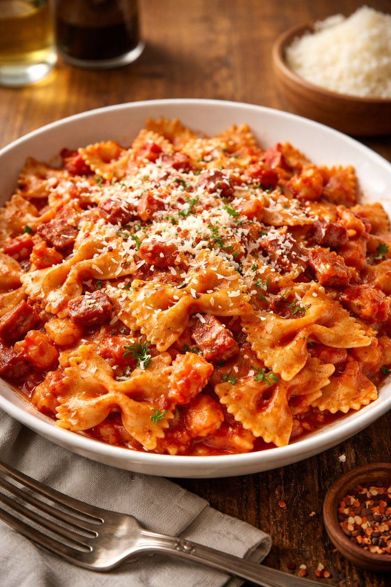

Farfalle all'Amatriciana

Description
Farfalle all'Amatriciana is a variation of the famous Roman pasta dish Amatriciana, traditionally made with bucatini. In this version, farfalle (bow-tie pasta) is coated in a rich tomato sauce flavored with guanciale (cured pork cheek), a touch of chili heat, and finished with Pecorino Romano. The result is savory, slightly spicy, deeply umami, and comforting, with the farfalle catching the sauce in its folds.
Ingredients
4 servings
- 400g farfalle pasta
- 150g guanciale, cut into small strips
(substitute pancetta if guanciale is unavailable)
- 400g canned peeled tomatoes (San Marzano preferred)
- 1 tsp red chili flakes
- Salt, as needed
- Freshly ground black pepper
- 60-80g Pecorino Romano, finely grated
Steps
- Crush the canned tomatoes by hand or with a fork. Set aside.
- Place the guanciale in a cold pan and cook over medium heat. Let the fat slowly render until the meat becomes golden and crispy. Remove from heat and set aside, keeping the rendered fat in the pan.
- Add chili flakes to the hot fat and briefly toast them. Pour in the tomatoes, stir, and simmer over medium-low heat for about 10-15 minutes, until slightly thickened. Taste and adjust salt carefully (guanciale and cheese are salty)
- Boil the farfalle in generously salted water until al dente. Reserve about 1 cup of the pasta cooking water before draining.
- Add the drained pasta directly to the sauce along with the crispy guanciale. Toss well, adding a little reserved pasta water if needed to loosen the sauce.
- Remove from heat and stir in grated Pecorino Romano. Mix until creamy and glossy. Add black pepper to taste.
- Top with extra Pecorino and, if desired, a pinch of chili flakes.
Back to the overview